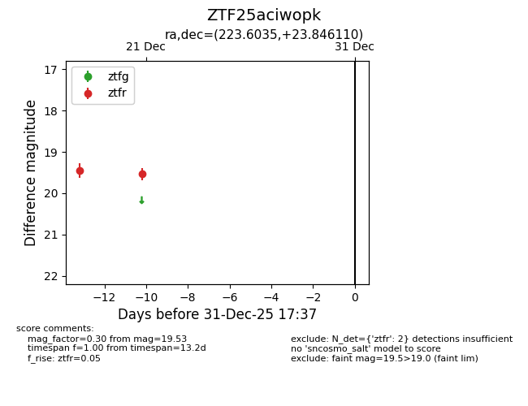
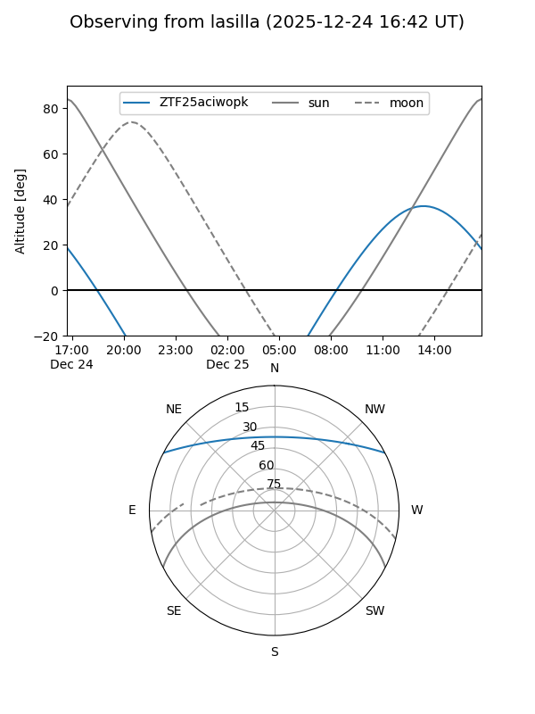
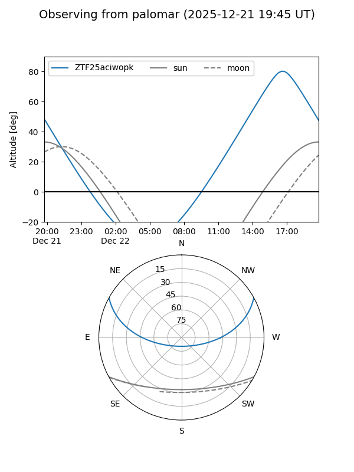

ZTF25aciwopk
Target ZTF25aciwopk at 2025-12-21 14:47
Aliases and brokers:
FINK: fink-portal.org/ZTF25aciwopk
Lasair: lasair-ztf.lsst.ac.uk/objects/ZTF25aciwopk
ALeRCE: alerce.online/object/ZTF25aciwopk
alt names
ZTF25aciwopk (ztf,fink_ztf)
Coordinates:
equatorial (ra, dec) = 223.6035,+23.84611
equatorial (HMS+DMS) = 14:54:24.84,+23:50:46.00
galactic (l, b) = (33.0987,+62.12356)
Flags:
Photometry:
last ztfr=19.53
2 ztfr detections
Lightcurve

Visibility


Additional plots